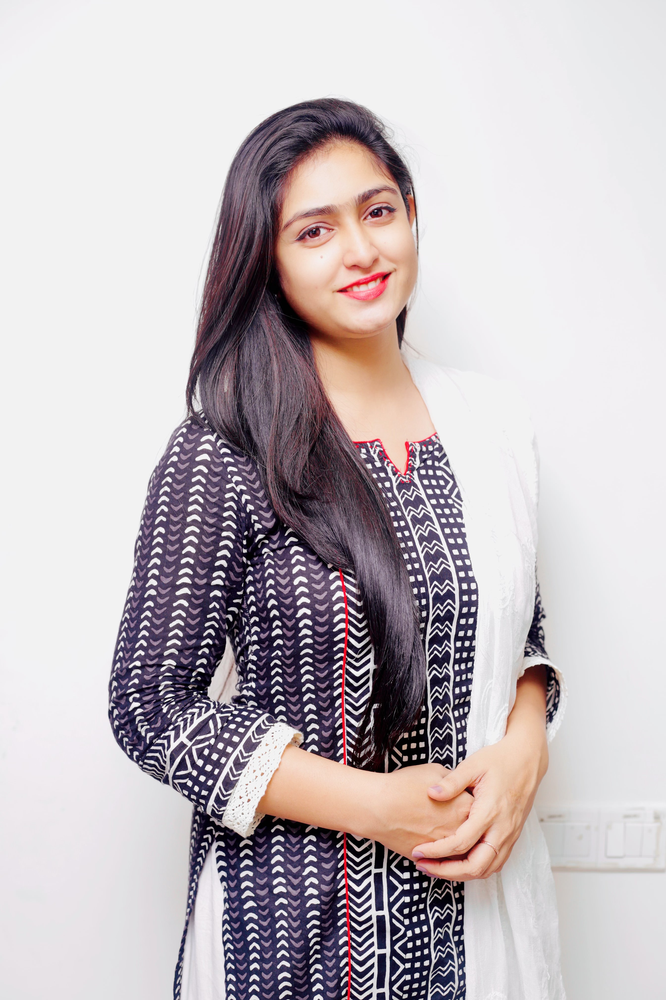

I build deep learning systems that read physiological signals — how a person stands, sways and recovers balance — to detect cognitive and physical decline earlier than current clinical screening allows.

I am completing my Ph.D. in Computer Science and Engineering at the University of Missouri, advised by Dr. Praveen Rao. My dissertation asks whether everyday motor function carries a signal reliable enough to screen for mild cognitive impairment, frailty and fall risk — conditions that respond best to early intervention, yet depend on specialist assessment that does not scale.
My research spans three areas: multimodal deep learning on physiological time series, few-shot learning for low-resource historical documents, and clinical NLP for making electronic health records comparable across institutions. It has been supported by the National Institutes of Health, the National Endowment for the Humanities, the National Science Foundation, PCORI and the Alzheimer's Association.
Before the Ph.D. I spent four years as a software engineer in Bangladesh, shipping features to applications with more than 100 million downloads. I still build and maintain the clinical platform my own research data comes from, which shapes how I think about what makes a model usable rather than merely accurate.
University of Missouri | Aug 2021 – Dec 2026 (expected)
Dissertation: multimodal deep learning for assessment of mild cognitive impairment, frailty and fall risk from motor-function data. Advisor: Dr. Praveen Rao.
GPA 3.97 / 4.00 · Columbia, MO
BRAC University | Jul 2013 – Dec 2017
Thesis: fall-control system for mobility-impaired users via double inverted pendulum modeling.
GPA 3.54 / 4.00 · Dhaka, Bangladesh
Dept. of Physical Therapy, University of Missouri | Jun – Aug 2026
Refactored 80% of the MPASS codebase into a shared service layer, restoring a runnable test suite and shortening the work required to add a new assessment type.
University of Missouri | Aug 2021 – Present
Distributed ML and LLM infrastructure at the graduate level (Hadoop, Spark, Ray, PyTorch DDP, Megatron-LM, vLLM); database systems at the undergraduate level. Outstanding Teaching Assistant Award, 2026.
Grameenphone (Telenor Group) | Dec 2019 – Jul 2021
Shipped offers, bundles and dynamic plan customisation for MyGP (100M+ downloads); owned bill-payment and recharge flows for GPay.
Silicon Orchard Ltd. | Jan – Nov 2019
Android development and secure REST API integration. Earlier: Junior Software Engineer, Media365 Ltd. (Oct 2017 – Dec 2018).
NIH / NIA a2 Pilot Award, P30AG073105 · 2024–2026
Led the deep learning modeling track for a portable screening platform that detects cognitive and physical decline from force-plate and depth-camera recordings. CoMo-Former, a hierarchical CNN–BiLSTM–RoFormer, reaches 92.1% AUC for mild cognitive impairment across 78 older adults under participant-level cross-validation. Also built the synchronised sensor-acquisition infrastructure supporting an 83-participant cohort.
NEH Digital Humanities Advancement Grant, HAA-287903 · 2022–2024
View datasetDesigned the annotation protocol with professional paleographers and released the first labelled corpus of a 220,000-page seventeenth-century archive at the Argentine National Archives. Fine-tuned M-BERT and BETO on it, outperforming ChatGPT-4o few-shot prompting on document classification (0.713 vs 0.289 F1).
A few-shot autoencoder that learns class-attribute signatures from one notary's handwriting and recognises unseen word classes in another's, reaching 93.5% at five examples per class and 86.0% at one.
PCORI · Greater Plains Collaborative
Built the note-classification and ontology-alignment pipeline mapping free-text clinical notes to the LOINC Document Ontology across a PCORnet network of 12 medical centers in 8 states — 132 million notes in under two hours at 73.4% document coverage.
Alzheimer's Association Research Grant · 2024–2027
Comparative LSTM and Transformer modelling for activities-of-daily-living recognition from non-wearable in-home ambient sensors, supporting aging-in-place monitoring in ADRD populations.
National Science Foundation · Spring 2026
Conducted 130+ customer-discovery interviews on secure human genomic analysis, applying LLM-assisted qualitative analysis to identify market needs, adoption barriers and translation opportunities. Received the highest in-person interview recognition.
PyTorch · TensorFlow · Keras · scikit-learn · XGBoost · Hugging Face Transformers · CNN · BiLSTM · Transformer · RoFormer · few-shot and low-resource learning · multimodal fusion · time-series modelling · SHAP · attention-based interpretability
PyTorch DDP · Ray · Apache Spark · Hadoop · Megatron-LM · vLLM · AWS · Snowflake · Git · Weights & Biases · CI/CD
Python · SQL · Java · Kotlin · R · relational design · normalisation · indexing · query optimisation
Force-platform centre-of-pressure and centre-of-mass signals · depth-camera motion data · in-home ambient sensors · clinical notes · EHR systems (Cerner Millennium, PCORnet Common Data Model) · medical ontologies (LOINC, UMLS) · CLAMP · wavelet signal processing
Nine publications from my doctoral work, four as first author. Full list on Google Scholar.
S. Sarker, T. M. Guess, S. Akter, S. A. Hockett, A. M. Kiselica, J. B. Hall, P. Rao.
IEEE/ACM Conference on Connected Health (CHASE), 2026
S. Akter, T. M. Guess, S. Sarker, S. A. Hockett, A. M. Kiselica, J. B. Hall, P. Rao.
IEEE/ACM Conference on Connected Health (CHASE), 2026
S. Sarker, A. T. Hamad, H. Alshammari, V. Grieco, P. Rao.
ACM/IEEE Joint Conference on Digital Libraries (JCDL), 2024
Paper PreprintN. Alrasheed, S. Sarker, V. Grieco, P. Rao.
ACM International Conference on Multimedia in Asia, 2023
PaperH. Khan, A. S. M. Mosa, V. Paka, M. K. Z. Rana, V. Mandhadi, S. Islam, H. Xu, J. C. McClay, S. Sarker, P. Rao, L. R. Waitman.
AMIA Annual Symposium, 2023
S. Sarker, P. Rao, M. K. Z. Rana, V. Mandhadi, X. Song, A. S. M. Mosa, L. R. Waitman, Y. Mohamed.
AMIA Annual Symposium, 2022 (poster)
S. Sarker, T. M. Guess, P. Rao.
In preparation — IEEE Transactions on Neural Systems and Rehabilitation Engineering
N. Abdalnabi, V. R. Addepalli, S. Sarker, A. Kiselica, E. Kummerfeld, P. Rao, K. Lee.
medRxiv, 2026
S. Akter, T. M. Guess, S. Sarker, S. A. Hockett, A. M. Kiselica, J. B. Hall, P. Rao.
medRxiv, 2025
University of Missouri · 2025 – 2026
Lead cross-departmental initiatives and organise professional development programmes for engineering graduate students.
University of Missouri · 2023 – 2024
Revitalised the organisation after the pandemic, growing an active graduate student community.
IEEE BIBM 2026 · IEEE Engineering Informatics 2023 · BDAI 2024
Review submissions for the IEEE International Conference on Bioinformatics and Biomedicine, IEEE Conference on Engineering Informatics, and the Conference on Big Data and Artificial Intelligence.
University of Missouri (NAESC-affiliated) · 2026
University of Missouri · Aug 2024 – May 2025
Represented EECS graduate students in university-wide governance.
National Science Foundation · Spring 2026
Led customer discovery on secure human genomic analysis across 130+ stakeholder interviews.
I am graduating in December 2026 and looking for research scientist, applied scientist and machine learning engineering roles in health and applied AI.
sarkershraaboni@gmail.com · Columbia, Missouri